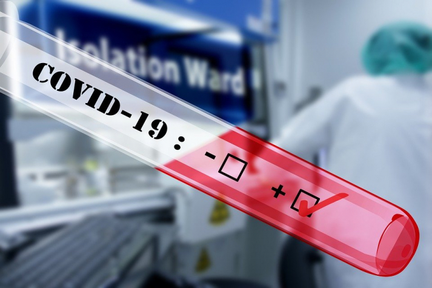
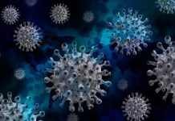

Sabemos claramente que hay prevención y tratamiento contra el COVID-19: Dra. Dolores J. Cachill

La profesora Dra. Dolores Cachill, es una experta mundialmente reconocida en desarrollo y automatización de tecnología proteónica de alto rendimiento y ha colaborado con la ciencia en grandes investigaciones sobre los virus.Esta vez no se anda con rodeos.Dice claramente que hay medicamentos y medidas de prevención capaces de combatir el coronavirus desde un principio, pero no lo han hecho porque se siguen otros intereses.
En el programa
The Highwire a la también inmunóloga y bióloga, molecular Dolores Cahill, culpa a los medios de comunicación de estar ocultando un tratamiento preventivo y que podría funcionar contra la COVID-19 en base a vitaminas, hidroxicloroquina y una buena alimentación.
Ella fue pionera en esta área de investigación en el Instituto Max-Planck de Genética Molecular en Berlín, Alemania, y posee varias patentes internacionales en este campo con aplicaciones de investigación, biomedicina y diagnóstico.Su currículo profesional es tan amplio que tomaría páginas para escribirlo todo.Dejaré el link en los comentarios a su biografía a su sitio web de la Escuela de Medicina de la Universidad de Dublín en Irlanda, donde es catedrática.
¿Qué dice la Dra. Cahill en lo referente al uso de mascarillas como medida de prevención contra el COVID?Lo mismo que muchos otros expertos y médicos han dicho, que debido a que la máscara cubre todo el rostro, se tiene menos oxígeno.
Con ello, precisa, se pone al sistema inmunológico bajo estrés, cuando las vitaminas serían esenciales para mantenerse funcionando.
Sostiene que tampoco hay necesidad del distanciamiento social, y que se toman decisiones que realmente enfermarán más a la población.
'Habrá más muertes a causa de los protocolos establecidos', advierte.
Y no duda en señalar que esta situación sería 'casi un crimen contra la humanidad'.
Habrá cientos de muertes por las políticas que se llevan a cabo.
Señala también que las personas adultas deberían dejar el confinamiento y desarrollar comunidad; que éste no el único virus que existe, y que en general tarda de entre 3, 4 y hasta seis semanas en desaparecer, pero que no es nada recomendable vivir bajo estrés porque esto sí afecta la salud, más aún, cuando existen prevención y tratamientos bien conocidos, por lo que debería haber consecuencias legales para gobiernos y consejeros que mantienen esta estrategia fallida que ciertamente causa miles de muertes en el mundo.
Aquí algunas capturas de la entrevista que ha sido prohibida por organismos internacionales:

Además, otras afirmaciones:
Posted On: 2020-06-13T00:00:00
Posted By: futuro
Content Date: 2020-06-13
Download Date: 2021-05-30
Document ID: L0C04CSA0